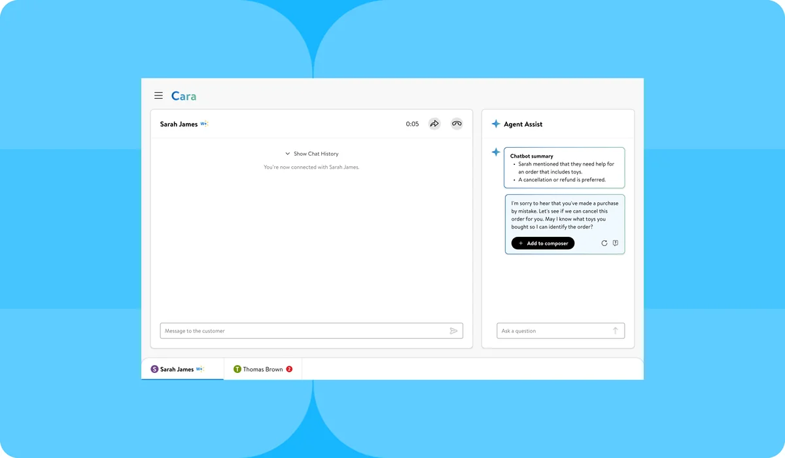
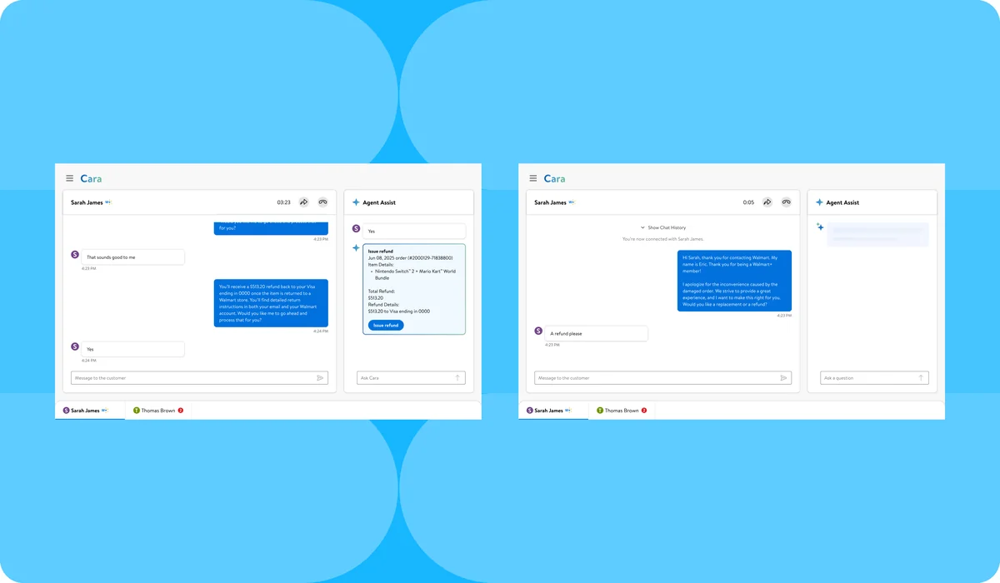

Walmart AI-Powered Care Application
I led the design of Walmart's first fully AI-powered customer care platform: one place that pulls scattered customer data together, understands what the customer is asking, and turns policy into plain next steps for the agent.
- Company
- Walmart
- Area
- AI for frontline customer care
- Users
- Customer care agents
- My role
- Led the design

- reduction in average handling time in early pilot testing, varying by issue type, with no negative impact on other care metrics
- 30–50%
- fully AI-powered customer care platform at Walmart
- 1st
Overview
I led the design of Walmart's first fully AI-powered customer care platform, changing how we serve millions of customers every day. By building AI into the support ecosystem, we created a solution that gives agents real-time, personalized context while significantly improving operational efficiency.
The project laid the foundation for Walmart's next generation of intelligent support and set a new bar for scalable, context-aware customer service.
Problem
Our guided workflows were working well overall, but we saw two clear pain points.
Too one-size-fits-all
Guided workflows were reliable, but they ran on rails. They couldn't adapt to what each customer needed in the moment. Every situation has its own quirks, and the workflows treated them all the same way.
Action and investigation were disconnected
Workflows shone when a customer needed something straightforward, like “I want a refund” or “Send me a replacement.” But when customers asked “Where's my refund?” or “Why was my order delayed?”, agents had to jump between data points and piece together clues. The linear workflow made investigation harder, not easier.
Solution
We built an AI layer that connects scattered customer information in one place. It understands what the customer is actually asking, then translates complicated policies into plain language with clear next steps.
This is our first version: a proof of concept that is already drawing attention across the organization. My team is testing it with real scenarios to decide where to take it next.

Impact
Early pilot testing showed a 30–50% reduction in average handling time, depending on the issue, with no negative impact on other metrics.